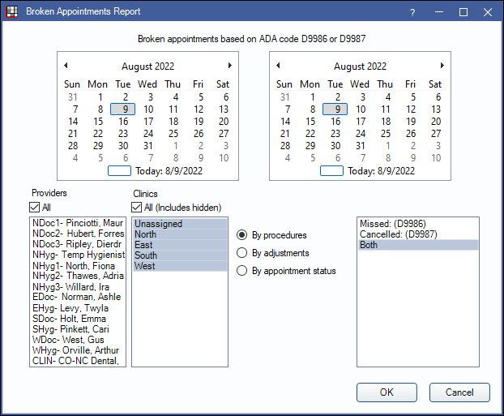
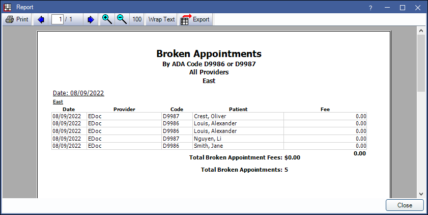
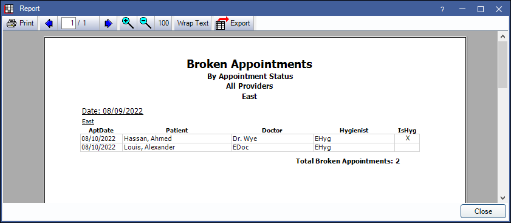

Broken Appointments Report
Track broken appointments in a date range using the Broken Appointments Report.
In Standard Reports, in the Lists area, click Broken Appointments.
The Broken Appointment report lists patients who have a broken appointment during a date range and any associated fees charged. It is grouped by clinic. Also see Break Appointment.
To control user access to this report, see Report Setup: Security Permissions.
Filters
Set the report criteria and filters before running the report.
Calendar: Select the date range. Select the start date in the first calendar and the end date in the second calendar.
Providers: Select the providers to include. Ctrl + click to select multiple providers, or check All to select all listed providers.
- When By procedures is selected, filters by provider attached to broken appointment Procedure.
- When By adjustments is selected, filters by provider attached to broken appointment Adjustment.
- When By appointment status is selected, filters by provider or hygienist attached to broken appointment.
Clinics: Select the clinics to include. Ctrl + click to select multiple clinics, or check All (Includes hidden) to include all clinics, including those marked hidden.
- When By procedures is selected, filters by the clinic assigned to the broken appointment procedure. By default, this is the clinic assigned to the appointment, but can be changed.
- When By adjustments is selected, filters by the clinic assigned to the broken appointment adjustment. By default, this is the clinic assigned to the appointment, but can be changed.
- When By appointment is selected, filters by the clinic assigned to broken appointment.
- If user is restricted to specific clinics, only accessible clinics will list. When checking All (includes hidden), results will include all clinics user has access to, including those marked hidden and anything unassigned to a clinic; results do not include clinics user is restricted from.
Select which patients will be included based on the different methods of marking broken appointments. There are up to three options:
- By procedures: Include patients who have a D9986 or D9987 completed procedure.
- By adjustments: Include patients with a specific adjustment type. Select the adjustment type in the list box on the right.
- By appointment status: Include patients who have appointments with a status of Broken. Only appointments left on the appointment book will be included. Deleted appointments and those sent to the unscheduled list or rescheduled will not appear on the report.
Available options for the report may change based on the selected Broken Appointment Automation settings in Preferences. See Technical Details below for additional information.
Report Preview
Click OK to generate a print preview the report. The report will differ based on the broken appointment method selected. Results for all report types are grouped by clinic.
Below are examples of each report type and explanation of the report columns. For a description of toolbar buttons, see Complex Report System.
Broken appointment report by procedure:
- Date: Broken appointment procedure date (i.e., date appointment was broken).
- Provider: Provider assigned to the broken appointment procedure. This defaults to the appointment provider, but can be changed.
- Code: Broken appointment procedure code.
- Patient: Patient last name and first name.
- Fee: Fee associated with the broken appointment procedure.
Fees are totaled for each clinic, at the end of that clinic's grid in bold.
The Total Broken Appointment Fees and Total Broken Appointments are included on the last page of the report in bold. If using clinics, these are the totals for all clinics included in the report.
Broken appointment report by adjustment type:

- Date: Broken appointment adjustment date (i.e., date appointment was broken).
- Provider: Provider assigned to the broken appointment procedure. This defaults to the appointment provider, but can be changed.
- Patient: Patient last name and first name.
- Amount: Amount (i.e., fee) associated with the broken appointment Adjustment.
- Note: Adjustment note.
Amounts are totaled for each clinic, at the end of that clinic's grid in bold.
The Total Broken Appointment Adjustment Amount and Total Broken Appointments are included on the last page of the report in bold. If using clinics, these are the totals for all clinics included in the report.
Broken appointment report by appointment status:
- AptDate: Date of appointment. The appointment must currently still be on the calendar to appear on the report.
- Patient: Patient last name and first name.
- Doctor: Provider assigned to the appointment.
- Hygienist: Hygienist assigned to the appointment
- IsHyg: X indicates the appointment is marked Is Hygiene.
The Total Broken Appointments are included on the last page of the report in bold. If using clinics, this is the total for all clinics included in the report.
Technical Details
In the Broken Appointments Report, the default selection for which patients are included is determined by the Broken Appointment Automation Preferences.
- If the Broken appointment procedure type Preference is set to something other than None, the report will default to run By Procedure. Only the selected Broken appointment procedure type procedure codes will be available to choose from (e.g., if set to Missed, only the missed procedure code, D9986, is listed and included on the report) If the Both preference is selected, users will be able to choose between multiple options (i.e., missed, cancelled, both).
- If Broken appointment procedure type is set to None and the preference Make broken appointment adjustment is enabled, By Adjustments is selected by default. Users can choose any subtraction adjustment type to include in the report; by default only the Broken appt default adj type is selected.
- If the Broken appointment procedure type is set to None and Make broken appointment adjustment is disabled, the report will default to By appointment status.